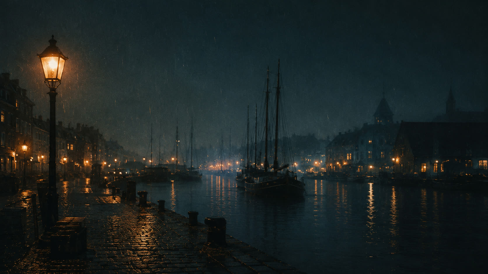
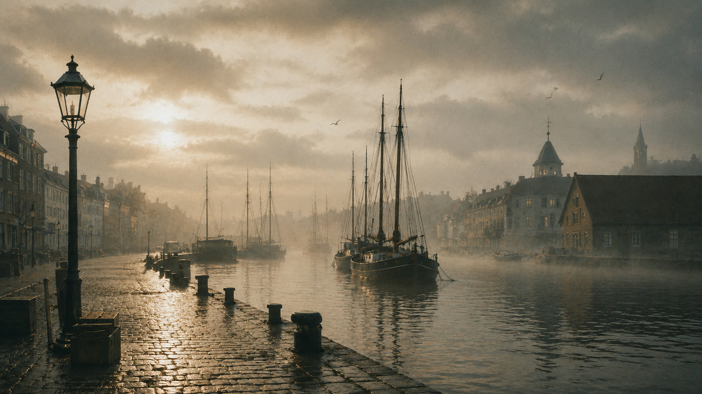

kasper-krog.dk · a personal harbor · 56.15° N, 10.20° E
A small harbor,
kept lit in the dark.
Think of a shelf of rooms and rituals: a game club run like a book club, software for volunteers, a tea journal, a few stranger worlds. Built in transitionary states.
If you are making a kind cultural project and could use help with events, volunteers, tech, or a clearer home online, you can write to me. I often help for free when I have the time and can be useful. There is a longer note inside.
Light and darkness intensify each other. A lamp matters most in a storm.
Warmth inside melancholy: small moments of care against the vastness of everything.
Technology can still feel human: made by someone who would also offer you tea.


Five rooms, doors open.
Projects and worlds, in no particular order. Some are tidy, some are mid-thought.
Aarhus Gamestormers gamestormers.dk
A video game club in Aarhus that treats games the way a film club treats cinema: worth a whole evening's talk. No rankings, no tournaments. Curious people welcome.
Turkis Crew turkis.gamestormers.dk
A volunteer platform for cultural spaces, built for music venues and the people who keep them running. The design starts from trust and accessibility; the dashboards can wait.
Matchabladet matchabladet.dk
A Danish matcha journal about ritual, slowness and attention. Part café guide, part diary. Tea as a calm anchor in a loud world.
Solis Lantern Chronicles solis.gamestormers.dk
A slightly mythological creative space that keeps changing shape: mood, identity, systems, worldbuilding. Less a product than a lantern carried from room to room.
Aarhus Folk Festival folk.gamestormers.dk
A redesign concept for a community folk festival in Aarhus. The brief, more or less: make the website feel like folk music does. Warm, homemade, shared.
The rest of the house.
Smaller rooms, kept for slower things. Wander; the doors stay unlocked.
Journal
Fragments and margin notes, written down before they evaporated.
HyldenShelf
What is feeding the atmosphere lately: books, sounds, ideas, leaves.
ForsamlingshusetGatherings
Game nights, festivals, venues: the rooms where people actually meet.
BaglokaletWorlds
The back room: worldbuilding, cozy horror, experiments nobody is rushing.
RitualerRituals
The small machinery of ordinary days: matcha, night walks, shared meals.
VærtenThe Keeper
Who keeps this place, what he believes, and how to send a signal.